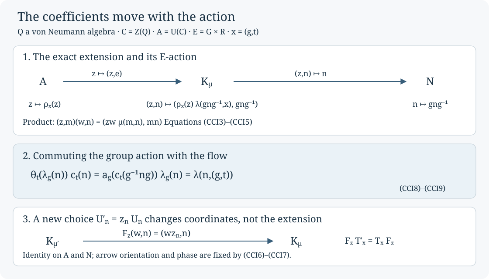

Centre-valued characteristic data
Characteristic phases for an action on an algebra with centre take their values in the unitary group of that centre. The action also moves the coefficients. We construct the resulting invariant directly from implementing unitaries, recover the equivariant group extension it describes, and prove invariance under genuine unitary cocycles and normal conjugacy. These are algebraic ingredients for the classification of actions on factors through their continuous cores.
Throughout, \(Q\) is a von Neumann algebra, \(C=Z(Q)\), and \(A=\mathcal U(C)\). A countable discrete group \(G\) acts by normal automorphisms \(a_g\). A strongly continuous flow \(\theta_t\) commutes with every \(a_g\). Write \(E=G\times\mathbb R\), \(b_{(g,t)}=a_g\theta_t\), and \(\rho_x=b_x|_C\). Our proofs use these supplied actions; no amenability, factoriality or classification theorem is assumed. Inner means implemented by a unitary of the whole algebra \(Q\).
The inner kernel and its implementing phases
Set \(N=\{n\in G:a_n\text{ is inner on }Q\}\). This is a normal subgroup. Products and inverses of inner automorphisms are inner, and \(a_g\operatorname{Ad}(u)a_g^{-1}=\operatorname{Ad}(a_g(u))\). Each \(n\in N\) acts trivially on \(C\), since every central element commutes with its implementer.
Choose \(U_n\in\mathcal U(Q)\) with \(a_n=\operatorname{Ad}(U_n)\), and choose \(U_e=1\). There is no measurable-selection problem on the countable discrete set \(N\). If two unitaries \(u,v\) implement the same automorphism, then \(v^*u q=qv^*u\) for every \(q\in Q\), so \(v^*u\in A\). Consequently there are unique central unitaries \(\mu(m,n)\) and \(\lambda(n,x)\) satisfying
\[ U_mU_n=\mu(m,n)U_{mn},\qquad b_x(U_{g^{-1}ng})=\lambda(n,x)U_n, \quad x=(g,t)\in E. \tag{CCI1} \]For the second identity, \(b_x a_{g^{-1}ng}b_x^{-1}=a_n\): the group action gives the conjugation and the commuting flow contributes nothing. Thus the quotient of its two implementers is central, exactly as above.
Every phase is a unitary. The maps in the real variable are strongly continuous: they are \(t\mapsto a_g\theta_t(U_{g^{-1}ng})U_n^*\), with the other factors fixed. On unitary balls multiplication is jointly strongly continuous because
\[ \|(u_i v_i-uv)\xi\| \leq \|(v_i-v)\xi\|+\|(u_i-u)v\xi\|. \]Adjoints are strongly continuous on unitaries as well: \(u_i^*-u^*=u_i^*(u-u_i)u^*\). In particular all the phase functions are Borel. No topological assertion about the subgroup of inner automorphisms is used.
Five identities and the extension they encode
For \(x=(g,t)\), \(y=(h,s)\in E\), and \(l,m,n\in N\), the phases obey
\[ \mu(l,m)\mu(lm,n)=\mu(m,n)\mu(l,mn).\tag{CCI2a} \] \[ \lambda(n,xy)=\rho_x\!\left(\lambda(g^{-1}ng,y)\right)\lambda(n,x).\tag{CCI2b} \] \[ \frac{\lambda(m,x)\lambda(n,x)}{\lambda(mn,x)} =\frac{\rho_x\!\left(\mu(g^{-1}mg,g^{-1}ng)\right)}{\mu(m,n)}.\tag{CCI2c} \] \[ \lambda(n,(m,0))=\frac{\mu(m,m^{-1}nm)}{\mu(n,m)}.\tag{CCI2d} \] \[ \mu(e,n)=\mu(n,e)=\lambda(e,x)=\lambda(n,(e,0))=1.\tag{CCI2e} \]All fractions are products with inverses in the abelian group \(A\). To prove (CCI2a), associate \(U_lU_mU_n\) in both ways and cancel \(U_{lmn}\). For (CCI2b), first apply \(b_y\) to \(U_{h^{-1}g^{-1}ngh}\), then apply \(b_x\). Its scalar coefficient is acted on by \(\rho_x\); the resulting implementer is \(U_n\). For (CCI2c), apply \(b_x\) to the product \(U_{g^{-1}mg}U_{g^{-1}ng}\) and use (CCI1) both before and after multiplying. For (CCI2d), compare \(U_mU_{m^{-1}nm}\) with \(U_nU_m\), and then multiply by \(U_m^*\). Normalization follows from \(U_e=1\). These calculations prove every displayed identity.
There is a group behind these equations. On \(A\times N\) put
\[ (z,m)(w,n)=(zw\mu(m,n),mn).\tag{CCI3} \]Associativity is exactly (CCI2a), the identity is \((1,e)\), and the inverse of \((z,n)\) is \((z^{-1}\mu(n,n^{-1})^{-1},n^{-1})\). The cocycle equation on \((n,n^{-1},n)\) gives \(\mu(n,n^{-1})=\mu(n^{-1},n)\), so this is both a left and right inverse. Thus (CCI3) defines a central extension
\[ 1\longrightarrow A\longrightarrow K_\mu\longrightarrow N\longrightarrow1, \quad z\longmapsto(z,e),\quad(z,n)\longmapsto n.\tag{CCI4} \]The action of \(E\) on this extension is
\[ T_x(z,n)=\bigl(\rho_x(z)\lambda(gng^{-1},x),gng^{-1}\bigr). \tag{CCI5} \]Equation (CCI2c), with \(m,n\) replaced by their conjugates by \(g\), proves that \(T_x\) preserves (CCI3). Equation (CCI2b) proves \(T_xT_y=T_{xy}\), and normalization gives \(T_e=\mathrm{id}\). Hence \(T_{x^{-1}}\) is the inverse and each \(T_x\) is an automorphism. On the kernel it restricts to \(\rho_x\). For \(m\in N\), (CCI2d) says precisely that \(T_{(m,0)}\) is conjugation by \((1,m)\).
For the phases constructed in (CCI1), the map \((z,n)\mapsto(zU_n,n)\) identifies \(K_\mu\) with
\[ \{(u,n)\in\mathcal U(Q)\times N:\operatorname{Ad}(u)=a_n\}, \quad (u,m)(v,n)=(uv,mn). \]It is injective, onto, and multiplicative by the implementer-quotient observation and (CCI1). Under this identification \(T_x(u,n)=(b_x(u),gng^{-1})\). Conversely, any normalized pair satisfying (CCI2), for a specified coefficient action with \(\rho_{(n,0)}=\mathrm{id}\), gives the abstract equivariant extension (CCI3)–(CCI5). This converse constructs a group extension; it makes no assertion about realizing it by automorphisms of a von Neumann factor.
Changing the implementers
Every other normalized choice has the form \(U'_n=z_nU_n\), where \(z_n\in A\) and \(z_e=1\). Substitution into (CCI1) gives
\[ \begin{aligned} \mu'(m,n)&=z_mz_nz_{mn}^{-1}\mu(m,n),\\ \lambda'(n,x)&=\rho_x(z_{g^{-1}ng})z_n^{-1}\lambda(n,x). \end{aligned}\tag{CCI6} \]For fixed \(G,N,\rho\), normalized pairs satisfying (CCI2) form an abelian group under pointwise multiplication. Each equation is multiplicative, and \(A\) is abelian. The identity pair and pointwise inverses satisfy the same equations. The pairs in (CCI6) obtained from the identity pair form a subgroup: the assignment \(z\mapsto(\lambda_z,\mu_z)\) is a homomorphism. Here are the cancellations proving membership. Both sides of (CCI2a) reduce to \(z_lz_mz_n/z_{lmn}\). Both sides of (CCI2b) reduce to \(\rho_{xy}(z_{h^{-1}g^{-1}ngh})/z_n\). In (CCI2c), both sides are
\[ \rho_x\!\left(\frac{z_{g^{-1}mg}z_{g^{-1}ng}}{z_{g^{-1}mng}}\right) \frac{z_{mn}}{z_mz_n}. \]In (CCI2d), both sides reduce to \(z_{m^{-1}nm}/z_n\), because \(\rho_{(m,0)}\) is the identity. The normalization follows from \(z_e=1\). This proves all five identities for every coboundary.
For an arbitrary pair and its change (CCI6),
\[ F_z:K_{\mu'}\longrightarrow K_\mu, \qquad F_z(w,n)=(wz_n,n)\tag{CCI7} \]is an isomorphism. In the product, \(z_mz_n\mu(m,n)=\mu'(m,n)z_{mn}\); this proves multiplicativity, and replacing \(z\) by \(z^{-1}\) gives its inverse. It fixes the kernel and the quotient. Formula (CCI6) also gives \(F_zT'_x=T_xF_z\): both first coordinates equal
\[ \rho_x(w)\rho_x(z_n)\lambda(gng^{-1},x). \]Conversely, an equivariant extension isomorphism fixing kernel and quotient sends \((1,n)\) to \((z_n,n)\). Multiplicativity and equivariance force exactly (CCI6). The quotient class \([\lambda,\mu]\) therefore records the equivariant extension independently of its chosen lifts. This is an algebraic quotient; no compactness or Hausdorff assertion about a function-space quotient is needed.
The real direction and its compatibility
Put \(c_t(n)=\lambda(n,(e,t))\) and \(\lambda_g(n)=\lambda(n,(g,0))\). By (CCI1), \(\theta_t(U_n)=c_t(n)U_n\). Applying two flow times, applying the flow to a product, and commuting the flow past \(a_g\) give, respectively,
\[ \begin{aligned} c_{s+t}(n)&=\theta_s(c_t(n))c_s(n),\\ c_t(m)c_t(n)\mu(m,n)&=\theta_t(\mu(m,n))c_t(mn),\\ \theta_t(\lambda_g(n))c_t(n) &=a_g(c_t(g^{-1}ng))\lambda_g(n). \end{aligned}\tag{CCI8} \]For the last equation, the two orders applied to \(U_{g^{-1}ng}\) have the same result; cancel \(U_n\). These proofs also show how the full extended coefficient is recovered:
\[ \lambda(n,(g,t)) =\theta_t(\lambda_g(n))c_t(n) =a_g(c_t(g^{-1}ng))\lambda_g(n).\tag{CCI9} \]Under the change \(U'_n=z_nU_n\), the real cocycle becomes
\[ c'_t(n)=\theta_t(z_n)z_n^{-1}c_t(n).\tag{CCI10} \]Thus a change of implementing unitaries may alter the real coefficients even though it leaves the class unchanged. The coefficient action is part of the equations: replacing \(\rho_x\) by the trivial action would give a different compatibility problem.

Figure. The exact extension of (CCI4), its action (CCI5), and the section change (CCI7). The middle panel gives the two equal coefficients in (CCI9). The gauge arrow points from the primed extension to the unprimed one. Every arrow is an algebraic map; no converse classification or factor-realization map is depicted. The editable SVG is the figure source.
Genuine cocycle perturbations fixed by the flow
Let \(v_g\in\mathcal U(Q)\) satisfy
\[ v_e=1,\qquad v_g a_g(v_h)=v_{gh},\qquad\theta_t(v_g)=v_g. \tag{CCI11} \]Then \(a'_g=\operatorname{Ad}(v_g)a_g\) is an action commuting with \(\theta\). Composition proves the action law using the middle identity; the last identity proves commutation with the flow. Its coefficient action is still \(\rho\), since inner automorphisms fix \(C\). Its inner kernel is still \(N\), since composition with an inner automorphism preserves and reflects innerness.
Choose \(V_n=v_nU_n\). These implement \(a'_n\), and
\[ V_mV_n =v_m a_m(v_n)U_mU_n =\mu(m,n)v_{mn}U_{mn} =\mu(m,n)V_{mn}.\tag{CCI12} \]For \(h=g^{-1}ng\), use \(gh=ng\) and the cocycle law twice:
\[ \begin{aligned} a'_g(V_h) &=v_g a_g(v_h)\lambda_g(n)U_n v_g^*\\ &=\lambda_g(n)v_{ng}U_n v_g^*\\ &=\lambda_g(n)v_n a_n(v_g)U_n v_g^* =\lambda_g(n)V_n. \end{aligned}\tag{CCI13} \]The last equality uses \(a_n(v_g)U_n=U_nv_g\). Also \(\theta_t(V_n)=c_t(n)V_n\), because \(v_n\) is fixed by the flow. Equation (CCI9) now proves equality of the entire extended \(\lambda\), not just its discrete restriction. With these lifts the two pairs are exactly equal. For arbitrary normalized lifts they differ by (CCI6), so the characteristic class is invariant. An arbitrary family of pointwise inner perturbations would not justify (CCI12) or (CCI13); the exact cocycle identity (CCI11) is an explicit hypothesis.
Normal transport and the invariant comparison
Suppose \(F:Q\to Q'\) is a normal star isomorphism with \(F\theta_t=\theta'_tF\), and transport the action by \(a'_g=Fa_gF^{-1}\). Its inner kernel is \(N\), and \(U'_n=F(U_n)\) are normalized implementing lifts. Put \(\sigma=F|_C:C\to Z(Q')\). The centre is preserved because commuting with every element is preserved in both directions by an onto isomorphism. Directly from (CCI1),
\[ \rho'_x=\sigma\rho_x\sigma^{-1},\qquad \mu'=\sigma(\mu),\qquad\lambda'=\sigma(\lambda). \tag{CCI14} \]The restriction \(\sigma\) is normal and intertwines the two centre flows. It sends the coboundaries (CCI6) to the corresponding coboundaries for \(\rho'\), because it conjugates the coefficient actions. Thus it induces the required isomorphism between the two characteristic quotients. Combining (CCI14) with Section CCI-05 proves necessity of the following data, modulo the indicated transport, for flow-compatible cocycle conjugacy:
\[ \bigl(N,\ a|_C,\ [\lambda,\mu]\bigr).\tag{CCI15} \]Here flow-compatible means the conjugating normal isomorphism intertwines the flows and the perturbing genuine cocycle is fixed by the flow, as in (CCI11). The fixed flows together with \(a|_C\) determine \(\rho\).
For the factor-action classification problem, the intended application takes \(Q\) to be a supplied continuous core, \(a_g\) the canonical extensions, and \(\theta\) its dual flow. A genuine cocycle in the original fixed algebra then meets the fixed-flow hypothesis. The algebraic arguments above apply once those constructions and their functorial identities have been supplied. Identifying this inner kernel with the original factor's centrally trivial kernel is an additional theorem. So are the sufficiency of the invariant and the lifting of every relevant centre-flow conjugacy to an automorphism. None is inferred from (CCI15).
A finite example detecting the coefficient action
Let \(Q=M_2(\mathbb C)^{\oplus4}\), take the flow to be the identity, and let \(G=\mathbb Z/2\mathbb Z\). Define one action by swapping the first two summands and fixing the other two. Define a second action by swapping the first two and also swapping the last two. Both are genuine actions. In each, the nonidentity element acts nontrivially on the centre \(C=\mathbb C^4\), so it cannot be inner. Thus both have \(N=\{e\}\), and both characteristic pairs are necessarily the normalized identity pair.
Nevertheless the actions are not cocycle conjugate. Any star automorphism of \(\mathbb C^4\) permutes its four minimal nonzero projections: minimality and orthogonality are preserved, and their sum is one. A normal isomorphism of \(Q\) therefore conjugates its centre permutation by an element of the four-point permutation group. The first action fixes two minimal central projections; the second fixes none. Conjugate permutations have the same number of fixed points, since the conjugating permutation bijects their fixed-point sets. Finally, every inner perturbation acts identically on the centre. A cocycle conjugacy is therefore impossible.
This example proves that the inner subgroup and bare characteristic coefficients alone need not determine an action in the algebraic setting. It is an example on a finite direct sum, not a counterexample to the amenable classification theorem for factors. The separate centre action in (CCI15) records precisely the distinction.
Sources and scope
T. Masuda, Unified approach to classification of actions of discrete amenable groups on injective factors, Section 2, formulates the module and characteristic data and the analytic classification theorem. The proofs here establish the algebraic construction, extension interpretation and necessary invariant comparison for the stated commuting actions. They do not use the classification theorem as a proof input.
Original exposition and editable figure: OpenAI GPT-6 Astra, Ultra, October 2026. Checked by the same model; no independent review is claimed. New text and figure: CC0-1.0.